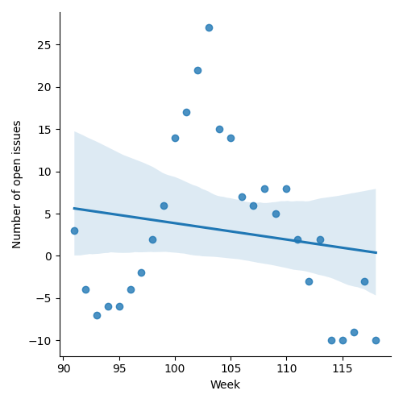
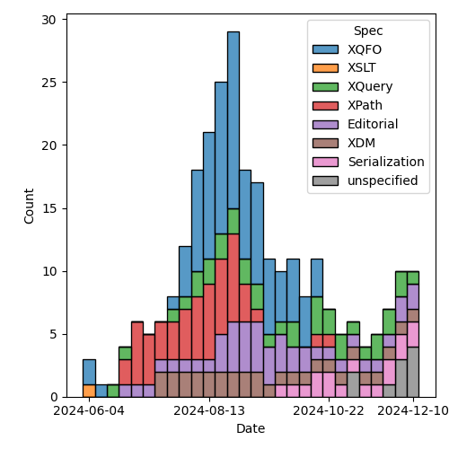
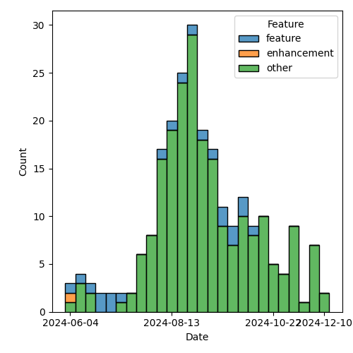

QT4 CG Meeting 103 Minutes 2024-12-17
Meeting index / QT4CG.org / Dashboard / GH Issues / GH Pull Requests
Table of Contents
- Draft Minutes
- Summary of new and continuing actions
[0/7] - 1. Administrivia
- 2. Technical agenda
- 2.1. PR #1638: 1634 Update description of decimal properties in the static context
- 2.2. PR #1633: 1627 Tweaks to schema type functions
- 2.3. PR #1620: 332 Add options for fn:path
- 2.4. PR #1622: 1619 Specify XSLT map-for-key function
- 2.5. PR #1617: 1606 Drop named item types, refine named record types, esp in XSLT
- 3. Any other business
- 4. Adjourned
Draft Minutes
Summary of new and continuing actions [0/7]
[ ]QT4CG-080-07: NW to update the build instructions in the README[ ]QT4CG-082-02: DN to work with MK to come to agreement on the fn:ranks proposal[ ]QT4CG-088-01: NW to consider how best to add a dedication to MSM.[ ]QT4CG-088-04: [Someone] needs to update the processing model diagram needs vis-a-vis the static typing feature[ ]QT4CG-089-01: CG to draft a PR that attempts to resolve the operators described in #755 to a smaller number of orthogonal choices.[ ]QT4CG-097-02: MK to make the XSD schema component references into links to XSD[ ]QT4CG-097-03: DN to proposal an axis for accessing the siblings of a node.[ ]QT4CG-103-01: MK to add an example of showing all the properties for an untyped node.[ ]QT4CG-103-02: MK to review other ways of handling namespaces in fn:path
1. Administrivia
1.1. Roll call [11/12]
Regrets: JWL.
[X]David J Birnbaum (DB)[X]Reece Dunn (RD)[X]Sasha Firsov (SF)[X]Christian Grün (CG)[X]Joel Kalvesmaki (JK) [:10-][X]Michael Kay (MK)[X]Juri Leino (JLO)[ ]John Lumley (JWL)[X]Dimitre Novatchev (DN)[X]Wendell Piez (WP)[X]Ed Porter (EP)[X]Norm Tovey-Walsh (NW). Scribe. Chair.
1.2. Accept the agenda
Proposal: Accept the agenda.
Accepted.
1.2.1. Status so far…
These charts have been adjusted so they reflect the preceding six months of work.

Figure 1: “Burn down” chart on open issues

Figure 2: Open issues by specification

Figure 3: Open issues by type
1.3. Approve minutes of the previous meeting
Proposal: Accept the minutes of the previous meeting.
Accepted.
1.4. Next meeting
This next meeting is planned for 7 January 2025.
The CG does not plan to meet on 24 or 31 December.
1.5. Review of open action items [0/7]
(Items marked [X] are believed to have been closed via email before this agenda was posted.)
[ ]QT4CG-080-07: NW to update the build instructions in the README[ ]QT4CG-082-02: DN to work with MK to come to agreement on the fn:ranks proposal[ ]QT4CG-088-01: NW to consider how best to add a dedication to MSM.[ ]QT4CG-088-04: [Someone] needs to update the processing model diagram needs vis-a-vis the static typing feature[ ]QT4CG-089-01: CG to draft a PR that attempts to resolve the operators described in #755 to a smaller number of orthogonal choices.[ ]QT4CG-097-02: MK to make the XSD schema component references into links to XSD[ ]QT4CG-097-03: DN to proposal an axis for accessing the siblings of a node.
1.6. Review of open pull requests and issues
1.6.1. Blocked
The following PRs are open but have merge conflicts or comments which suggest they aren’t ready for action.
1.6.2. Merge without discussion
The following PRs are editorial, small, or otherwise appeared to be uncontroversial when the agenda was prepared. The chairs propose that these can be merged without discussion. If you think discussion is necessary, please say so.
- PR #1653: 1652 Use function markup
Proposal: merge without discussion.
Accepted.
1.6.3. Close without action
It has been proposed that the following issues be closed without action. If you think discussion is necessary, please say so.
- Issue #1655: JSON maps
- Issue #523: Dealing with component name conflicts with library packages
- Issue #374: Can't view the XSD for XSLT in the browser
Proposal: close without further action.
Accepted.
1.6.4. Substantive PRs
The following substantive PRs were open when this agenda was prepared.
- PR #1638: 1634 Update description of decimal properties in the static context
- PR #1633: 1627 Tweaks to schema type functions
- PR #1622: 1619 Specify XSLT map-for-key function
- PR #1620: 332 Add options for fn:path
- PR #1617: 1606 Drop named item types, refine named record types, esp in XSLT
- PR #1609: 1651 Ordered Maps
- PR #1587: 557 Add fn:binary-resource
2. Technical agenda
2.1. PR #1638: 1634 Update description of decimal properties in the static context
See PR #1638
- MK: This updates the XQuery prolog to make it consistent with what we decided about format number.
Proposal: accept the PR.
Accepted.
2.2. PR #1633: 1627 Tweaks to schema type functions
See PR #1633
- MK: This is feedback from implementation work and writing tests.
- … The matches function is now available for generalized atomic types (simple unions, etc.)
- … The
validateandvalidfunctions are dropped. The spec is was being over ambitious; there are a lot of detailed conditions that aren’t described. The spec and tests for all the edge cases didn’t seem worth the effort.
- MK: This might be revisited when we discuss the open issue of doing schema validation in XPath.
- MK: Added some clarifying notes.
Proposal: accept the PR.
Accepted.
- JLO: Since this is section only for schema-aware processors?
- MK: One of the reasons to remove validate and valid was to avoid that question!
- … In a non-schema aware processor, you only get the builtin types.
Some additional discussion of what the consequences are of using these functions in a non-schema-aware processor.
ACTION: QT4CG-103-01: MK to add an example of showing all the properties for an untyped node.
Some discussion of how this relates to the types of variables. These function return information about values and nodes; there’s nothing specific for maps and arrays (yet).
- MK: There are some quite good examples in the test suite.
- DN: Do we have any way, except using
instance ofto find out the type of a variable? - MK: We can’t ask about variables, we can only ask about values.
- … It would be nice to have a function that tells you about the types of values in a sequence, but we don’t at the moment.
- DN: Why don’t we have it?
- MK: We don’t have it because we haven’t done the work.
- CG: How would this differ from the
type-offunction? - MK: That hasn’t been changed by this PR.
In fact, fn:type-of would work on a sequence…
2.3. PR #1620: 332 Add options for fn:path
See PR #1620
- MK: This PR adds options to
fn:path. The options arenamespacesandindexes.- … MK describes the semantics of the options.
- JLO: I like this; what is the use case for not having the indexes?
- MK: Sometimes folks just want a pattern that it matches. I’ve certainly stripped out the positions manually at least once.
- JK: My first thought on the namespaces option is that it’s going to be a boolean. Can we have an option to discard the namespaces?
- MK: It’s an interesting one; you could just use the result of the
namefunction. - JLO: Is there a way to get what JK wants? To strip all namespaces?
- MK: No, you can’t map all the namespaces to the empty prefix. The prefixes have to be unique in the map.
- WP: Why are we always going up to the root? What about looking at the context?
- … I think a lot of flexibility is warranted here.
Some discussion of finding the context from a specified node.
- RD: In the text, would it be worth making in-scope-namespaces a link to the relevant function?
- NW: I think that’ll be a link by default when we merge the earlier function markup PR.
- RD: I think it can be useful to specify a consistent set of namespaces. Data from a source that generates namespaces automatically can be problematic. Especially in contexts like RDF or EPUB where the namespaces have set prefixes.
- DN: I usually ask what are the defaults? In these examples, if there’s no prefix for the default namespace, you don’t get a prefix and that’s not what the usual semantics of XPath are.
- MK: If you use the namespaces option, you’ll get a path that only works if you setup the context correctly.
- DN: I don’t think I’d ever use this.
- MK: It’s trying to tackle a different use case, a diagnostic one where you want the path to be human readable.
- DN: We could have another key in the record which is the context to take a path from.
- CG: We could have a union type a boolean or a map, and if the boolean is specified, it determins whether or not namespaces to used.
ACTION: QT4CG-103-02: MK to review other ways of handling namespaces in fn:path
Proposal: accept the PR.
Accepted.
2.4. PR #1622: 1619 Specify XSLT map-for-key function
See PR #1622
- MK: This is something we’ve had as a Saxon extension for a while. You could
argue that all of these things can be achieved just with maps; but keys exist
and this gives you extra ways of using them.
- … One of the things you can do with it is enumerate the keys.
- … It also allows you to merge keys across multiple documents and compare them.
- MK: This PR also revises keys to be more consistent with maps.
- … It changes the comparison rules so that they’re consistent with maps (modulo collations)
- … The main practical change is that numeric equality is transitive.
- … It also makes keys timezone independent, as maps are.
- MK: There’s a new map-for-key function.
- … It takes a key name and an element and returns a map view of that key.
- RD: Are we tracking incompatible changes and has this been added?
- MK: Yes, we are and it has.
- NW: It worries me a little, but making the rules consistent seems like its worth the risk.
- JK: I’d like to see more examples. I don’t understand the sentence about enumerating key values.
Some question about the meaning of “enumeration” and the idea of attaching numbers to them.
- JK: I’m not a huge fan of the name of the function.
- DN: When we’re talking about keys in XSLT and in maps, that’s quite confusing. Maybe the reader would be confused about when it means XSLT key and when it means map key.
Proposal: accept the PR.
Accepted.
2.5. PR #1617: 1606 Drop named item types, refine named record types, esp in XSLT
See PR #1617
- MK: There’s been some pushback agains this; but I think we have two features
that have a lot of overlap. I think that’s confusing. There’s an argument for
both of them individually, but adding both at the same time is likely to be
confusing and complex.
- … The really useful one is names record types; given the feature of named record types, the ability to add named item types is of marginal value. We could drop it.
- … Some folks like named item types for unions and enumerations.
MK walks through the prose changes.
- DN: What was the main reason for dropping named item types? They can still be useful when the item is not a map (maps overlap with records). I can imagine a function types. It’s really convenient and useful to be able to define such types.
- MK: Just that we were adding two features with a lot of overlap.
- DN: I still think item types are clearly useful and valuable.
- RD: I think it makes sense to have a distinct record type declaration,
primarily because it’s also declaring a function into the static context.
That makes it easier for language tools and IDEs to enumerate the in-scope functions.
- … But I also find it useful to be able to declare schema types as named item types, especially in XQuery.
- … It makes sense to simplify now and then maybe work out how to add that back to XQuery.
- JLO: Since I wouldn’t even be sure how to declare a type, but I would be able
to declare a record, so maybe item types were already underspecified.
- … I’d like to have the feature, but I’d like to have a really solid type system to build on.
- … I’m in favor of this PR, but I’d like more powerful item declarations in the future.
- WP: What’s the impact of schema awareness here? That seems to bear directly.
Straw poll:
Choice 1: accept this PR, removing item types without predjudice to add them back later.
5
Choice 2: Abandon this PR, attempt to resolve the overlap and conflicts instead.
3
There’s no consensus here. We’ll have to take it up next year.
3. Any other business
Happy winter holidays and best wishes for a healthy and happy New Year!
4. Adjourned
See you in 2025!